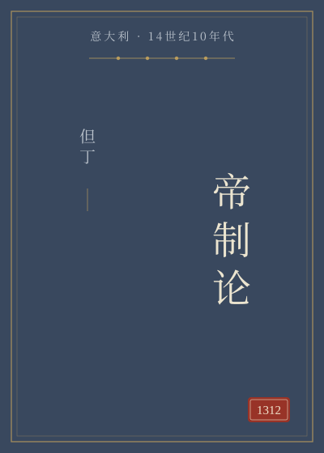
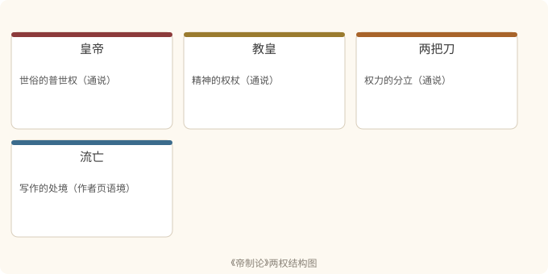

帝制论
一、基本信息
| 作者 | 但丁 |
|---|---|
| 成书/出版 | 作者页注记：Britannica——帝制论（De monarchia）——'key medieval political-philosophy tract'（中世纪政治哲学重要论著） Dante Alighieri — Encyclopaedia Britannica（百科全书） |
| 国别/地区 | 意大利 |
| 时代 | 古代 · 14世纪10年代 |
| 体裁 | 政治哲学论著 |
| 语言 | 拉丁语 |

《帝制论》两权结构图（主题·结构图）
二、创作背景
作者页注记：帝制论（De monarchia）——'政治哲学论著（Britannica：key medieval political-philosophy tract）'。
Britannica：但丁——流亡中的佛罗伦萨人（作者页语境——待核）。
题材（通说待核）：三卷论普世帝制——世俗权力独立于教会。
三、内容脉络
（通说待核）第一卷：普世帝制的必要。
（通说待核）第三卷：'两把刀'——皇帝不从属于教皇。
四、主要人物表
| 人物 | 身份 | 说明 |
|---|---|---|
| （论著无人物） | —— | 政治哲学论著 |
五、主题与艺术特点
- 世俗与教会的权力分立（通说待核）。
- 'key medieval political-philosophy tract'（B注记）。
- 流亡者的政治学（作者页语境）。
六、影响与评论
- Britannica：'key medieval political-philosophy tract'（作者页注记）。
Dante Alighieri — Encyclopaedia Britannica（百科全书） - Britannica：但丁《神曲》为代表作（作者页交叉）。
Dante Alighieri — Encyclopaedia Britannica（百科全书）
七、阅读建议
难点
- 中世纪政治神学。
- 亚里士多德-经院哲学框架。
- 《帝制论》中译本（商务印书馆等——通说待核）。
- 拉丁文原版（公有领域）。
但丁思想侧写；与《论俗语》对读。
八、待核实
- 成书年份（约1312-1313说）待核。
- 三卷结构核对（通说）。
- '两把刀'论细节待核。